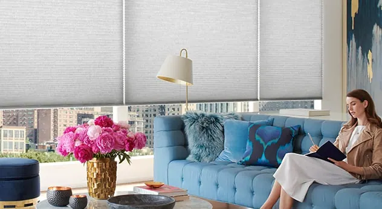
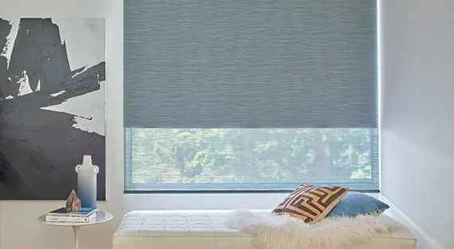
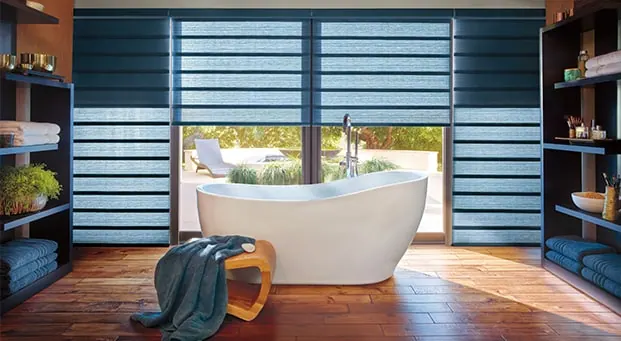
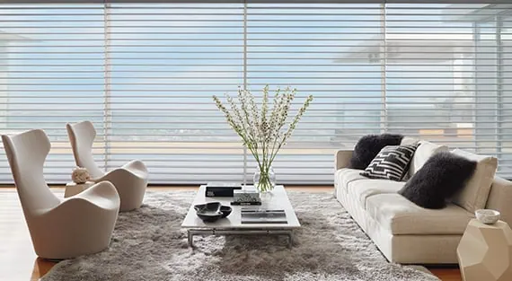
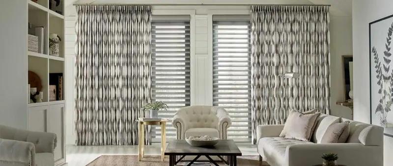
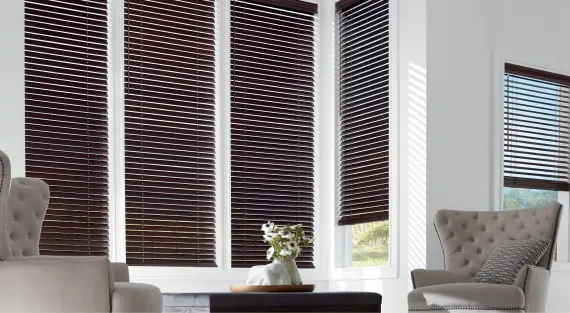
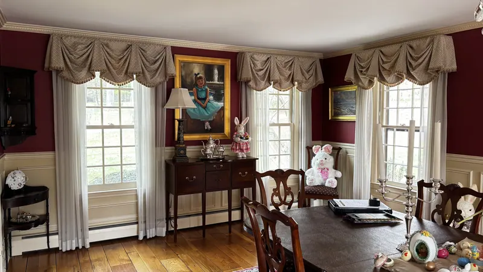
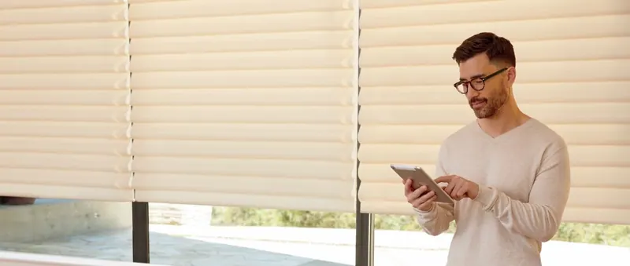
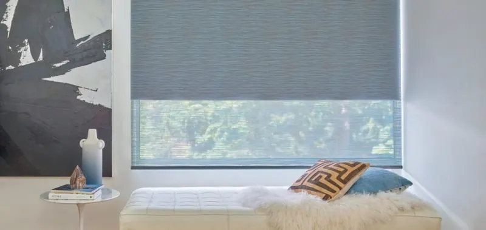

Products
Hunter Douglas window treatments
We are your local Hunter Douglas dealer: sheers and shadings, honeycomb shades, shutters, wood and vertical blinds, Roman and woven wood shades, all measured and installed by our own team.
Shop by product
Hunter Douglas has hundreds of options for color, texture, fabric and function. Start with a category, then let us bring samples to you.

Cellular honeycomb shades
The magic of cellular honeycomb shades is in their specially engineered honeycomb shape, a unique construction that traps air and creates a layer of insulation…
Explore Cellular honeycomb shades
Roller & solar shades
Simple, classic and elegant, Hunter Douglas roller shades and solar screen shades offer a clean, contemporary look at the window.
Explore Roller & solar shades
Roman shades
Our Roman shades combine the soft look of fabric folds with the operating ease and convenience of a traditional shade, stacking smoothly and evenly when…
Explore Roman shades
Sheers & shadings
Transform light and provide UV protection for your furniture and artwork with our innovative, light-diffusing sheers and shadings.
Explore Sheers & shadings
Shutters
The privacy you need, the craftsmanship you deserve. Our selection of shutters are available in long-lasting materials and elevated finishes, and can be made…
Explore Shutters
Side panels & drapery
Complete your look with side panels and drapery. Choose from timeless and on-trend fabrics, including lofty textures and alluring jacquards…
Explore Side panels & drapery
Vertical blinds
The ideal choice for sliding-glass doors or large windows, our custom vertical blinds are designed in a range of materials, including vinyl, fabric and…
Explore Vertical blinds
Wood & metal blinds
Rustic. Traditional. Classic. The combination of natural materials and glistening metal is a timeless favorite.
Explore Wood & metal blinds
Woven woods
Add warmth and character to your space with materials that pay homage to unique textures found in nature.
Explore Woven woods
Also from our showroom

Drapery & valances
Custom soft window solutions in a variety of styles, from a basic pinch pleat to a swag and jabot.
Explore Drapery & valances
Motorized shades
Program shades to open and close through the day with PowerView® Automation.
Explore Motorized shades
Featured & new
The newest Hunter Douglas fabrics and technology, from Design Studio™ to PowerView® Automation.
Explore Featured & new
How it works
One local team from the first visit to the last bracket.
Consultation
We visit at a time that suits you, with samples, and talk through light, privacy and style room by room.
Measure and quote
We measure every window and give you a clear written quote.
Order
We order everything and track it, so you don't have to.
Install
Our installers fit, adjust and clean up, and show you how everything works.

Let’s look at your windows together.
A free visit, real samples, and an honest recommendation. No pressure to buy on the spot.